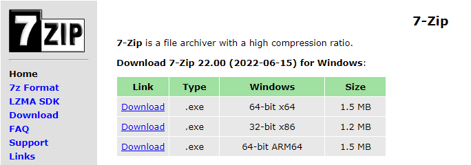

Estas instrucciones le guiarán en la creación de un instalador modificado.
Para crear el instalador modificado, debe tener los siguientes prerequisitos
Para descargar los instaladores de Windows 11 y Windows 10, busque "descargar windows 11" y "descargar windows 10", o haga clic en los enlaces de abajo para descargar ambos instaladores:
Haga clic aquí para descargar Windows 11
Haga clic aquí para descargar Windows 10
NOTA: si se ve desde el Instalador manual de Windows 11, los enlaces se abrirán en una ventana de Internet Explorer
NOTA: debe descargar la versión de 64 bits de ambos instaladores, dado a que Windows 11 SOLO soporta hardware de 64 bits

Cuando llegue a la página de descarga de Windows 11, NO haga clic en el primer botón. Esto descargará el Asistente de instalación de Windows 11, que actualizará su sistema actual a Windows 11. En vez de eso, lo que debe hacer, es hacer clic en el segundo o el tercer botón. Si ya tiene un instalador de Windows 10 descargado previamente, elija la tercera opción, seleccione "ISO multi-edición", luego su idioma, y luego haga clic en "Descarga de 64 bits". Esto descargará una copia de la última versión de Windows 11 en su carpeta de descargas.
Si no tiene una imagen de Windows 10, deberá hacer clic en el segundo botón. Esto descargará la herramienta de creación de medios.
NOTA: si descarga la HCM de Windows 11, deberá hacer lo mismo para Windows 10
NOTA: si utiliza un sistema Windows, y desea descargar Windows 10, está limitado a la HCM

Cuando tenga la Herramienta de Creación de Medios preparada, ábrela. Tardará algo de tiempo para cargar por completo, porque necesita descargar archivos del instalador requeridos. NO continue con la primera opción, ya que hará lo mismo que el Asistente de instalación: actualizar su sistema. Continue con las opciones recomendadas, elija "Archivo ISO", especifique una ubicación y deje que se descarguen los archivos. Cuando se complete, tendrá un instalador de Windows (11 o 10) almacenado en la ubicación especificada.
Para descargar 7-Zip, busque "7-zip" o vaya a 7-zip.org

Descargue la arquitectura apropiada. Para una mejor compatibilidad, elija 32-bit x86. Dese cuenta de que la versión de 32 bits no usará todos los recursos dados por un sistema de 64 bits para otros programas. Abra el instalador, y continúe con la instalación.
OSCDIMG es parte del kit de implementación y evaluación de Windows (ADK). Es una colección de herramientas diseñadas para administradores. El ADK viene con OSCDIMG. También lo puede descargar por separado.
OSCDIMG + Windows ADK (Windows 11, 22H2)
Si continúa con la segunda opción, elija los valores predeterminados y espere a que se instale. La primera opción vendrá como un archivo ZIP. Extraigalo, y tendrá una copia de OSCDIMG.
Cuando todos los prerequisitos estén listos, tendrá que preparar el espacio de trabajo, como lo haría en un taller. Primero, cree un directorio (carpeta) donde almacenará las imágenes y herramientas (lo último es opcional). Puedes nombrarlo de cualquier manera. Cree otro directorio dentro del que acaba de crear. Este almacenará los archivos de instalación temporales. Si tiene una copia independiente de OSCDIMG, cópiela al directorio de trabajo.
El resultado final debe quedar así:

Ahora va a extraer los archivos de los instaladores. Es recomendado esperar un tiempo, que depende de las velocidades de lectura y escritura del disco
NOTA: los métodos se realizarán en la línea de comandos, pero pueden ser realizados en una interfaz gráfica
OPCIONAL: añadir 7-Zip a %path%
Si desea utilizar la línea de comandos, una manera más fácil de acceder a 7-Zip es añadirlo a %path%. Para hacerlo, escriba: path %path%;"\Program Files\7-Zip"
Para extraer los archivos del instalador utilizando este método, prepare una ventana de Símbolo del sistema (cmd), y escriba:
7z e [ruta del instalador de origen] "sources\install.wim" -o.
* Reemplace [ruta del instalador de origen] por la ubicación del instalador de Windows 11. Si no extrae nada, intenta reemplazar install.wim por install.esd.
Después de este comando, escriba:
7z x [ruta del instalador de origen] -o.\temp
* Reemplace [ruta del instalador de origen] por la ubicación del instalador de Windows 10.
La salida de los comandos debería ser así:

Para extraer los archivos del instalador utilizando este método, prepare una ventana de Símbolo del sistema (cmd), y escriba:
7z x [ruta del instalador de origen] -o.\temp
* Reemplace [ruta del instalador de origen] por la ubicación del instalador de Windows 11.
Después de este comando, escriba:
7z e [ruta del instalador de origen] "sources\appraiser.dll" -o. && 7z e [ruta del instalador de origen] "sources\appraiserres.dll" -o.
* Reemplace [ruta del instalador de origen] por la ubicación del instalador de Windows 10.
La salida de los comandos debería ser así:

Para extraer los archivos del instalador utilizando este método, prepare una ventana elevada de Símbolo del sistema (cmd, teniendo que ejecutarla como administrador), y escriba:
7z x [ruta del instalador de origen] -o.\temp
* Reemplace [ruta del instalador de origen] por la ubicación del instalador de Windows 11.
La salida del comando debería ser así:

Ahora viene lo bueno: modificar los archivos del instalador
Para modificar el instalador utilizando este método, deberá hacer las siguientes tareas:
install.wim (o install.esd si está presente) del directorio temporal escribiendo: del .\temp\sources\install(.wim/.esd)install.wim o install.esd a temp\sources escribiendo: move /y install(.wim/.esd) .\temp\sourcesPara modificar el instalador utilizando este método, deberá hacer las siguientes tareas:
appraiser.dll y appraiserres.dll de temp\sources escribiendo: del .\temp\sources\appraiser.dll && del .\temp\sources\appraiserres.dlltemp\sources escribiendo: move /y *.dll .\temp\sourcesNOTA: necesitará una ventana del Símbolo del sistema como administrador
Para modificar el instalador utilizando este método, deberá hacer las siguientes tareas:
wimmountdism /mount-wim /wimfile=.\temp\sources\boot.wim /index=2 /mountdir=.\wimmountSYSTEM. Para ello, escriba reg load HKLM\W11SYS .\wimmount\system32\config\SYSTEMLabConfig. Para ello, escriba reg add HKLM\W11SYS\Setup\LabConfigLabConfig: BypassCPUCheck, tipo: REG_DWORD, valor: 1: reg add HKLM\W11SYS\Setup\LabConfig /v BypassCPUCheck /t REG_DWORD /d 1BypassRAMCheck, tipo: REG_DWORD, valor: 1: reg add HKLM\W11SYS\Setup\LabConfig /v BypassRAMCheck /t REG_DWORD /d 1BypassSecureBootCheck, tipo: REG_DWORD, valor: 1: reg add HKLM\W11SYS\Setup\LabConfig /v BypassSecureBootCheck /t REG_DWORD /d 1BypassTPMCheck, tipo: REG_DWORD, valor: 1: reg add HKLM\W11SYS\Setup\LabConfig /v BypassTPMCheck /t REG_DWORD /d 1BypassStorageCheck, tipo: REG_DWORD, valor: 1: reg add HKLM\W11SYS\Setup\LabConfig /v BypassStorageCheck /t REG_DWORD /d 1SYSTEM: reg unload HKLM\W11SYSdism /unmount-wim /mountdir=.\wimmount /commitNOTE: you must close all processes that show the mount point, or else you will not be able to unmount the image
wimmount: rd .\wimmount /s /qDespués de modificar los archivos del instalador, debe crearlo. Para ello, ejecute este comando:
oscdimg -l[etiqueta de imagen] -m -u2 -b.\temp\boot\etfsboot.com .\temp [Ruta del instalador de destino]
* Reemplace [etiqueta de imagen] por la etiqueta que desea. NO deben haber espacios entre -l y la etiqueta deseada, y no debe pasar los 32 caracteres
* Si está haciendo un instalador para un dispositivo con UEFI habilitado, debe reemplazar -b.\temp\boot\etfsboot.com por -b.\temp\boot\Efisys.bin -pEF, si está presente
* Reemplace [Ruta del instalador de destino] por la ruta del instalador de destino
* Si tiene instalado el ADK, reemplace oscdimg por "\Program Files (x86)\Windows Kits\10\Assessment and Deployment Kit\Deployment Tools\x86\Oscdimg\oscdimg.exe" o añada "\Program Files (x86)\Windows Kits\10\Assessment and Deployment Kit\Deployment Tools\x86\Oscdimg" a %PATH%: path %path%;"\Program Files (x86)\Windows Kits\10\Assessment and Deployment Kit\Deployment Tools\x86\Oscdimg"
La sintaxis debería ser así:

Después de que la imagen se haya creado, siéntese libre de eliminar todos los archivos temporales y reclame espacio de disco.
Como probar un micrófono, necesita probar su instalador modificado. No diga: "Probando... 1, 2, 3..." para probar el instalador. Para ello:
Necesitará descargar balenaEtcher o Rufus para poner el instalador en una unidad USB que pueda llevar siempre consigo. Si todo va bien, puede instalar Windows 11.